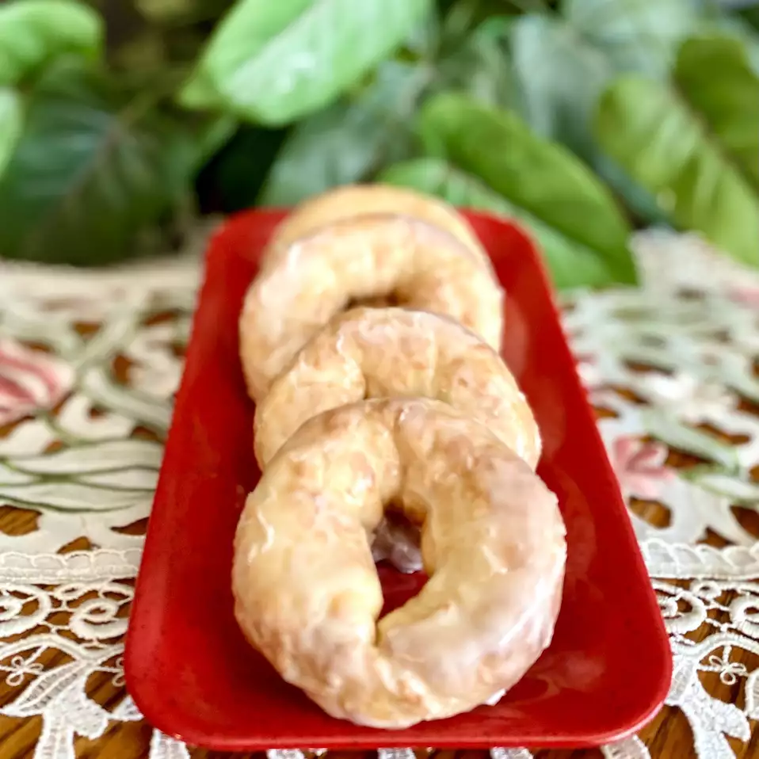

Home
Two-Ingredient Dough Air Fryer Donuts

Description
Who knew you could actually make donuts with 2 ingredients? I glaze them but you can just sprinkle powdered sugar, cinnamon-sugar, or eat them plain.
Ingredients
Two Ingredient Dough:
- 1 cup self-rising flour
- ¾ Greek yogurt
Optional Glaze:
- ½ cup powdered sugar
- 3 tablespoons heavy whipping cream, or as needed
Directions
- Preheat an air fryer to 350 degrees F (175 degrees C). Line basket with parchment paper and spray with nonstick cooking spray. Set aside.
- Combine flour and yogurt in a bowl. Flour your hands and knead dough until dough comes together into a ball. Divide dough into 4 pieces.
- Flour a work area and roll each piece into a long rope, 10 to 12 inches long. Pinch both ends of dough together. Place in the air fryer basket, making sure they do not touch and spray with nonstick cooking spray.
- Air-fry until donuts start to brown, 3 1/2 to 4 minutes. Flip donuts and air-fry until golden brown, an additional 3 to 4 minutes. Cool.
Optional Glaze:
- Place powdered sugar and heavy whipping cream in a bowl and whisk to combine. Dip donuts in glaze and place on wire rack until set, 5 to 6 minutes.